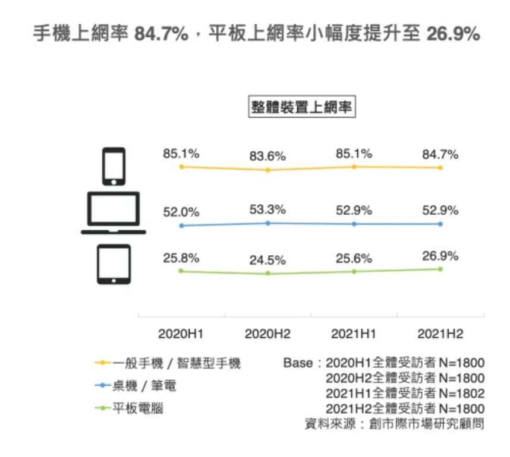

自製Music Player
〈用CSS排出好看的網頁〉第四回
平常看習慣沒有聲音的網頁，突然瀏覽到一個有背景音樂的網站總是會讓人耳目一新！又或者是假如網站能夠讓自己手動控制是否播放音樂，想必會讓使用者對這個網站的印象分數大大加分！基於這麼多的誘因，學會在網頁中播放音樂就顯得特別重要。因此這次要來實現的就是利用網頁做一個自製的音樂播放器╰(*°▽°*)╯
自製的音樂播放器
這是一個簡單的音樂播放器。裡面收錄了3種鳥叫聲，並且有「播放/暫停鈕」、「下一首」與「前一首」三個按鈕。另外，這邊也用了RWD響應式網頁設計的概念，當畫面寬度小於特定像素(px)時，音樂播放器就會自動調整寬度至當前瀏覽器視窗的寬度。緊接著就來到程式碼的部分吧！
HTML
<!doctype html>
<html lang="zh-tw">
<head>
<title>Music Player</title>
<meta charset="utf-8">
</head>
<body>
<div class="container">
<div class="player">
<audio id="audio-player"></audio>
<h2 id="music-name" class="music-name"></h2>
<div class="player-progress">
<div class="progress-value">
<span id="player-current-time">--:--</span>
<span id="player-duration">--:--</span>
</div>
<progress id="player-progress"></progress>
</div>
<div class="player-buttons">
<button id="btn-prev" class="btn btn-prev">
<svg xmlns="http://www.w3.org/2000/svg" width="16" height="16" fill="currentColor" class="bi bi-rewind-fill" viewBox="0 0 16 16">
<path d="M8.404 7.304a.802.802 0 0 0 0 1.392l6.363 3.692c.52.302 1.233-.043 1.233-.696V4.308c0-.653-.713-.998-1.233-.696L8.404 7.304Z"/>
<path d="M.404 7.304a.802.802 0 0 0 0 1.392l6.363 3.692c.52.302 1.233-.043 1.233-.696V4.308c0-.653-.713-.998-1.233-.696L.404 7.304Z"/>
</svg>
</button>
<button id="btn-play" class="btn btn-play">
<svg xmlns="http://www.w3.org/2000/svg" width="16" height="16" fill="currentColor" class="bi bi-play-fill" viewBox="0 0 16 16">
<path d="m11.596 8.697-6.363 3.692c-.54.313-1.233-.066-1.233-.697V4.308c0-.63.692-1.01 1.233-.696l6.363 3.692a.802.802 0 0 1 0 1.393z"/>
</svg>
</button>
<button id="btn-next" class="btn btn-next">
<svg xmlns="http://www.w3.org/2000/svg" width="16" height="16" fill="currentColor" class="bi bi-fast-forward-fill" viewBox="0 0 16 16">
<path d="M7.596 7.304a.802.802 0 0 1 0 1.392l-6.363 3.692C.713 12.69 0 12.345 0 11.692V4.308c0-.653.713-.998 1.233-.696l6.363 3.692Z"/>
<path d="M15.596 7.304a.802.802 0 0 1 0 1.392l-6.363 3.692C8.713 12.69 8 12.345 8 11.692V4.308c0-.653.713-.998 1.233-.696l6.363 3.692Z"/>
</svg>
</button>
</div>
</div>
</div>
</body>
</html>
首先透過HTML的各種tag來建立該有的元素。大致的架構是用一個container裝著我們的player。在player裡面包含了三大部分：
- 音樂本身：用<audio>標籤來控制音樂的播放；用<h2>標籤用來呈現目前播放的音樂資訊。
- player-progress。用來呈現當前音樂播放進度。
- player-buttons。用來呈現各種需要的按鈕。
在前面的HTML中有使用到<svg>標籤，它是scalable vector graphics的縮寫，是透過數學運算的方式來把圖形呈現在畫面上，所以把圖形放大或縮小，都不會出現邊緣鋸齒狀的樣子。在<svg>標籤中有很多的參數，就是告訴瀏覽器該怎麼把這個svg圖形給畫出來的資訊。至於這些參數是否需要自己寫呢？其實不用～只要在Bootstrap Icons這個網站上點開需要的SVG圖形，然後利用copy HTML的方式，就可以把SVG圖形引用到自己的網站中囉！把該有的元素都建立好之後，再來就是針對元素的樣式設(CSS)定以及賦予各個元素該有的功能(JavaScript)了。
CSS
* {
box-sizing : border-box;
}
body {
background : #eaeaea;
color : #001f3f;
margin : 0;
overflow : hidden;
}
.container {
display :flex;
align-items : center;
justify-content : center;
min-height : 100%;
}
.player {
width : 480px;
padding : 48px 64px;
border-radius : 36px;
background : #eaeaea;
box-shadow : 41px 41px 82px #bebebe, -41px -41px 82px #ffffff;
margin : 20px;
}
.player .music-name {
margin : 0;
margin-bottom : 8px;
text-align : center;
}
.player .player-progress {
margin-top : 36px;
}
.player .player-progress .progress-value {
width : 100%;
justify-content : space-between;
display : flex;
color : #a5aaaf;
font-size : 16px;
}
.player .player-progress progress {
width : 100%;
height : 5px;
/*-webkit-開頭表示可以改變用webkit browser engine的瀏覽器中，原生的User Interface，
可作用在較舊版的瀏覽器上(CSS標準確定之前，各家瀏覽器已經自己實現相對應的功能)*/
-webkit-appearance : none;
/*適用於新版的瀏覽器(CSS標準確定之後)*/
appearance : none;
}
/*-webkit-progress-bar與-webkit-progress-value適用於非firfox與非ie的瀏覽器！*/
/*使用偽元素，需要用::；此為控制progress bar未填滿的部分*/
.player .player-progress progress::-webkit-progress-bar {
background : #c3c7cc;
border-radius : 3px;
}
/*使用偽元素，需要用::；此為控制有數值的部分*/
.player .player-progress progress::-webkit-progress-value {
background : linear-gradient(to right, #5232c1, #12ccd0);
border-radius : 3px;
}
.player .player-buttons {
display : flex;
align-items : center;
justify-content : center;
margin-top : 24px;
gap : 32px;
}
.player .player-buttons .btn {
font-size : 18px;
width : 48px;
height : 48px;
color : #6f7275;
background : linear-gradient(145deg, #cacaca, #f0f0f0);
border : none;
border-radius : 50%;
cursor : pointer;
display : flex;
justify-content : center;
align-items : center;
}
.player .player-buttons .btn.btn-prev, .btn.btn-next {
box-shadow : 5px 5px 10px #aaaaaa, -5px -5px 10px #ffffff;
/*display : inline-block;*/
margin-top : 2px;
margin-right : 2px;
}
.player .player-buttons .btn.btn-play {
font-size : 36px;
width : 76px;
height : 76px;
border-radius : 50%
border : none;
box-shadow : 6px 6px 12px #aaaaaa, -6px -6px 12px #ffffff;
background : linear-gradient(to right, #5232c1, #15f1f1);
}
.bi-play-fill, .bi-pause-fill {
width : 50px;
height : 50px;
padding-left : 5px;
}
.bi-rewind-fill, .bi-fast-forward-fill {
width : 25px;
height : 25px;
}
/*實現RWD響應式網頁的部分*/
@media (max-width : 768px) {
.player {
width : 100%;
box-shadow : none;
padding : 24px;
}
.player .player-buttons .btn {
width : 40px;
height : 40px;
}
.player .player-buttons .btn.btn-play {
width : 64px;
height : 64px;
}
}
透過上面的CSS將HTML中的元素去做美化，變成使用者瀏覽網頁時看到的樣子，相關的說明都已經寫在程式碼的旁邊。比較特別要提的部分是，在上面的CSS中有出現「-webkit-」開頭的屬性，webkit是一個開源的web瀏覽器引擎，可以把它理解為「要讓瀏覽器運作」的角色。以它作為引擎的瀏覽器例如Microsoft Edge、Google Chrome。所以說以-webkit-開頭的屬性就代表能夠在以它為基礎的瀏覽器上去做設定。
至於在本範例中看到的-webkit-appearance : none; 與appearance : none;。明明是同樣的屬性，為什麼要寫兩次呢？這是因為在CSS統一之前(CSS3之前)，各家瀏覽器就已經有實作一些各自的屬性。在CSS3之後，很多屬性就能夠適用在大部分的瀏覽器上。apearance屬性正好就是屬於在CSS3之前以webkit引擎為主的瀏覽器所建立的屬性。所以特別用-webkit-appearance去針對舊版不支持CSS3的webkit-based瀏覽器來做設定。
另一個要提的就是關於RWD響應式網頁設計。因應現在使用手機上網的比率高於電腦，所以傳統上針對電腦螢幕寬度 > 長(高)度所做的排版需要有所轉變，以符合手機長(高)度 > 寬度的螢幕尺寸。

利用@media這個關鍵字，就可以開始針對不同的螢幕來源與條件做設定。在@media後面跟著的會是一個或多個media query。它的形式為
(media types) and (media features)
media types 可以指定要針對什麼樣的輸出裝置，比方說是螢幕(screen)、印表機(print)、all(所有裝置都適用)。而media features則是針對media types的條件限制，例如
max-width : 1250px
表示限制的條件是最大寬度為1250px。所以在本範例中@media的條件為：針對所有輸出裝置(沒有寫的話預設為all)，若最大寬度為768px(意思等同寬度小於等於768px)則網頁排版會有所更動，更動的內容就是在@media的{}中的條件。而其他沒有在{}中的排版則維持原樣。最後是要讓網頁有功能的JavaScript部分。
JavaScript
const btnPlay = document.querySelector('#btn-play');
const btnPrev = document.querySelector('#btn-prev');
const btnNext = document.querySelector('#btn-next');
const musicName = document.querySelector('#music-name');
const playerCurrentTime = document.querySelector('#player-current-time');
const playerDuration = document.querySelector('#player-duration');
const playerProgress = document.querySelector('#player-progress');
const audioPlayer = document.querySelector('#audio-player');
let currentMusic = 0;
const musics = [
{
name : '白頭翁',
path : '../musics/Chinese_bulbul.mp3'
},
{
name : '領角鴞',
path : '../musics/Collared_Scops_Owl.mp3'
},
{
name : '斑鳩',
path : '../musics/turtle_dove.mp3'
}
];
btnPlay.addEventListener('click', () => togglePlayMusic());
btnPrev.addEventListener('click',() => changeMusic(false));
btnNext.addEventListener('click',() => changeMusic());
audioPlayer.addEventListener('timeupdate',() => timeUpdate());
const togglePlayMusic = () => {
if(audioPlayer.paused) {
audioPlayer.play();
btnPlay.innerHTML = `
<svg xmlns="http://www.w3.org/2000/svg" width="16" height="16" fill="currentColor" class="bi bi-pause-fill" viewBox="0 0 16 16">
<path d="M5.5 3.5A1.5 1.5 0 0 1 7 5v6a1.5 1.5 0 0 1-3 0V5a1.5 1.5 0 0 1 1.5-1.5zm5 0A1.5 1.5 0 0 1 12 5v6a1.5 1.5 0 0 1-3 0V5a1.5 1.5 0 0 1 1.5-1.5z"/>
</svg>`;
} else {
audioPlayer.pause();
btnPlay.innerHTML = `
<svg xmlns="http://www.w3.org/2000/svg" width="16" height="16" fill="currentColor" class="bi bi-play-fill" viewBox="0 0 16 16">
<path d="m11.596 8.697-6.363 3.692c-.54.313-1.233-.066-1.233-.697V4.308c0-.63.692-1.01 1.233-.696l6.363 3.692a.802.802 0 0 1 0 1.393z"/>
</svg>`;
}
};
const changeMusic = (next = true) => {
if(next && (currentMusic < musics.length - 1)) {
currentMusic++;
} else if(!next && (currentMusic > 0)) {
currentMusic--;
} else {
return;
}
updatePlayer();
togglePlayMusic();
};
const updatePlayer = () => {
const music = musics[currentMusic];
musicName.innerHTML = music.name;
audioPlayer.src = music.path;
};
const timeUpdate = () => {
//將audio DOM物件中的currentTime與duration屬性給獨立出來。單位是秒(second)
const { currentTime, duration } = audioPlayer;
if(isNaN(duration)) return;
playerDuration.innerHTML = formatSecondsToMinutes(duration);
playerCurrentTime.innerHTML = formatSecondsToMinutes(currentTime);
playerProgress.max = duration;
playerProgress.value = currentTime;
};
const formatSecondsToMinutes = (seconds) => {
return new Date(seconds * 1000).toISOString().slice(14, 19);
};
//等整個HTML文件完全載入瀏覽器後，將音樂相關資訊設定好
window.onload = () => {
updatePlayer();
}
透過JavaScript，讓網頁具備播放音樂以及按下特定按鈕時能夠有相應功能。首先是建立一個叫musics的陣列，裡面放著3個物件，每個物件就代表一段音樂相關的資訊，包含音樂的標題(name)與它存放的位置(path)。接著就是關於
關於音樂的時間相關設定，將音樂的時間相關參數抓出來後，利用formatSecondsToMinutes函數做轉換。用new Date(時間；單位要改成毫秒milliseconds)建立一個Date物件，然後用toISOString()函數轉換成標準的表達式，其形式為YYYY-MM-DDTHH:mm:ss.sssZ，然後再用slice(14, 19)函數從前述的字串中抓出第14個到第18個字元的字串，剛好就是分鐘：秒鐘的部分。更多跟JavaScript的Date物件的說明可以參考最下方資料。
小結
以上就是一個音樂播放器簡單的實作，由於多了audio物件的設定所以看起來比較複雜，但卻是一個很實用的功能！

國立交通大學材料系奈米科技碩士班畢業(現在應該稱國立陽明交通大學ʕ •ᴥ•ʔ)。雖然非資工相關科系畢業，但本著對資工領域的興趣而開始自學相關知識，目前則專攻網頁相關知識，如HTML5、CSS3、JavaScript、Node.js。以跨領域學習者的角度來介紹資工領域相關的知識，除了加深自己對相關知識的理解，也期望同是跨領域學習的朋友們因為瀏覽我的文章而有更多不一樣的觀點可以參考。